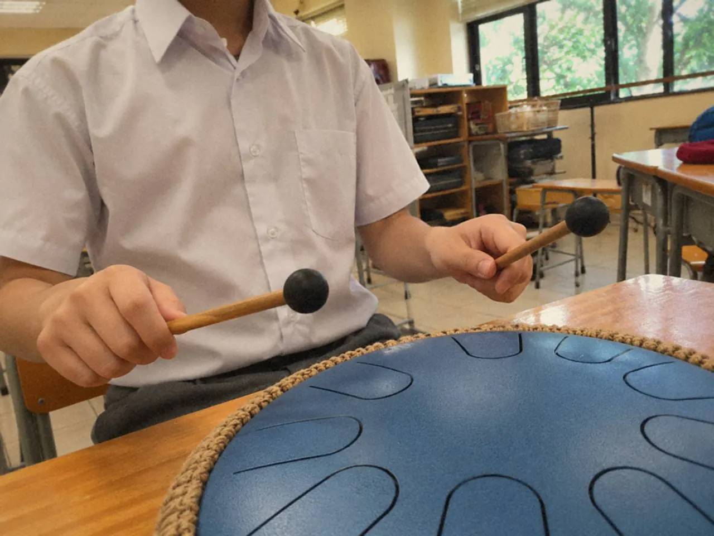
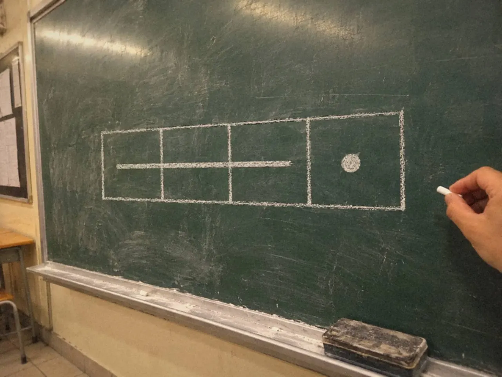

休止符指定一段不發聲的時間，延音線把相同音高的音值相加，附點增加原音值的一半，簡譜的減時線把音值縮短。四樣都在管時間。連線外形像延音線，管的卻是奏法和樂句。

音都吹對了，錄音回聽時長短卻不對，多半是看漏了這些小記號。
休止符沒有聲音，為甚麼要練？
樂譜上的空白不可以略過。休止和音符一樣參與節奏，每次提早進下一音，旋律的形狀就變了，合奏也會失去共同的拍子。
把休止看成要完成的動作：不吹、不敲，心裏的計時繼續。初學者可以口數拍子，或輕拍腿部，保留這段看不見的時間。
試一個四拍練習。第一、第三拍拍手，第二、第四拍只在心裏數，手不要在安靜拍提前移到下一下。休止也不等於放下專注。
再改成連續兩拍有聲、兩拍安靜，聽整組長度是否仍然相同。這樣訓練的，是沒有外在聲音時仍能保持時間，而不只是跟着自己的敲擊走。
不同樂器的「停」也不一樣。吹管停止送氣，敲擊樂器讓餘音自然消退，聽起來是兩回事。休止符要求的效果要配合樂器與作品理解，沒有新音，不一定等於完全沒有餘音。

在自己的曲裏找一個容易搶進的休止，把前後兩拍一起練：前一音按音值完成，安靜拍心裏計時，下一音在正確拍點回來。
兩條弧線，先看連着甚麼音
延音線連接相同音高，把音值相加。連線常把一組音標成連貫的奏法或樂句。兩者形狀相似，辨認時要先看線連着甚麼音，再看上下文。
例如同音的兩個四分音符以延音線連接，通常持續成兩拍，第二個音不重新起音。不同音高由連線連接，就要換音，同時保持連貫。
跨小節的延音線最易出錯。小節線不代表聲音重新開始，心裏的拍子仍向前走。初學者可以用鉛筆寫出總拍數，把前後音值一起數清楚，再按正常方式數拍。
連線要按樂器處理。長笛或竹笛常要讓氣流延續、手指換音清楚；其他樂器奏法不同，不能用同一個身體動作概括所有情況。
用同一個音試「重新起音」和「持續延長」，再用兩個不同的音試連貫轉換，讓眼睛看到的記號變成耳朵認得的結果。
譜面印刷不清，或者長線同時涉及樂句與奏法，可參考版本說明，並與老師確認。
附點加的是原音值的一半
附點寫在音符旁邊，附點四分音符就是一個四分音符加一個八分音符。先把長度拆開，比直接背「一拍半」穩，因為拍的單位會隨拍號改變。
以四分音符為一拍，附點四分音符持續一拍半，後面接一個八分音符，兩者合成兩拍。同樣道理，附點二分音符是三拍。
這個比例要準，不能只憑「前面長些、後面短些」的感覺。把每拍平均分成兩份，兩拍共四份：第一份開始長音，維持三份，第四份才出下一音。可以拍手或用同一個音做，暫時不理指法。
最常見的偏差，是長音不夠長，短音提早出現。把兩拍的格子畫出來，標清哪一份出聲，時間關係就看得見。

長度穩定了，再聽短音有沒有被急忙帶過。短音仍要有清楚的起點，並準時接往下一拍。吹管演奏時，也要避免為了趕短音而突然夾緊嘴唇。
放回曲中時，接上前後一拍再練。附點的性格有時輕巧，有時有推動力，由速度、奏法和風格共同決定。
簡譜的點和線，各有各的工作
數字只交代音級，節奏要連同減時線、附點和延長線一起讀。只把數字唱對，長短仍可能全部一樣。
常見簡譜以不帶減時線的數字表示四分音符，加一條減時線是八分音符，加兩條是十六分音符。實際等於多少拍，要配合拍號。
點有三個位置，分別管不同的事：
- 數字上方的點：高八度，影響音高。
- 數字下方的點：低八度，影響音高。
- 數字右方的點：附點，影響時間。
在一行譜裏把三種位置都找出來，逐個說出它影響音高還是時間，再演奏，就少了把高音點誤讀成附點的機會。
遇到延長線，按記譜與拍號數清持續時間。常見寫法是數字後每一條橫線加一個四分音符，所以 4/4 裏的「5 — — —」是四拍。不要看到橫線就任意停頓。教材用特別記法的話，先讀它的說明，避免把不同版本的習慣混在一起。
開始新曲時，先拿走音高，只讀節奏。口數或拍手完成兩小節，再唱數字，然後加入樂器。三次保持相同速度，留意加上指法後，短音有沒有拉長，長音有沒有提早結束。
常見問題
延音線和連線可以同時出現嗎？
可以。一組連貫的音裏，也會有兩個相同音高以延音線相連。先把延音的總拍數數好，再按連線保持連貫。
附點音符一定是一拍半嗎？
不一定。只有以四分音符為一拍時，附點四分音符才是一拍半。計算時回到定義：原音值加一半。
簡譜的休止符怎樣寫？
常見寫法用數字 0 表示休止，長短同樣看減時線。休止兩拍通常寫兩個 0，不用延長線。
把自己正在練的曲翻開，圈出一個休止、一條延音線和一個附點，用節拍器慢速拍一遍節奏。音高方面的記號可接着讀音高記號：升降、音程、音階與調號。